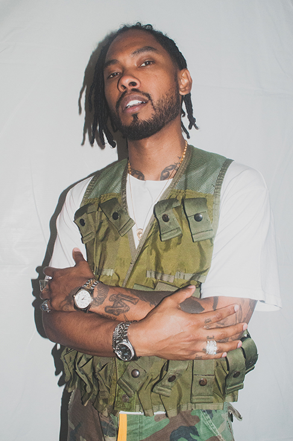
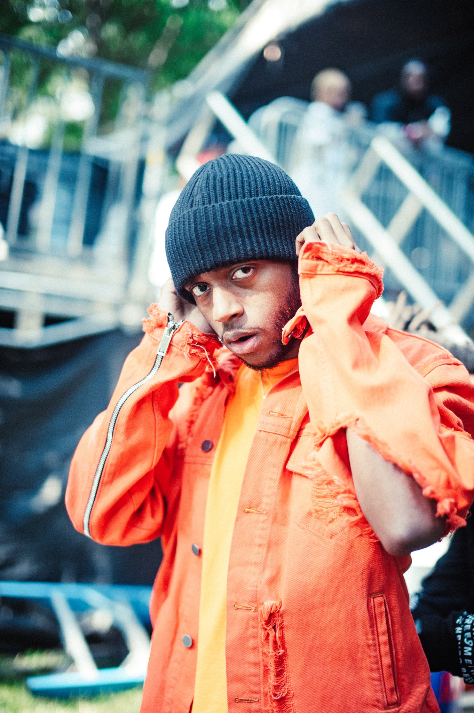
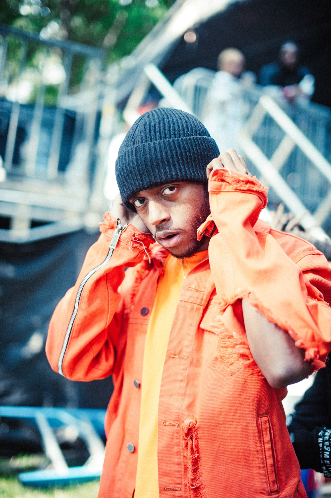
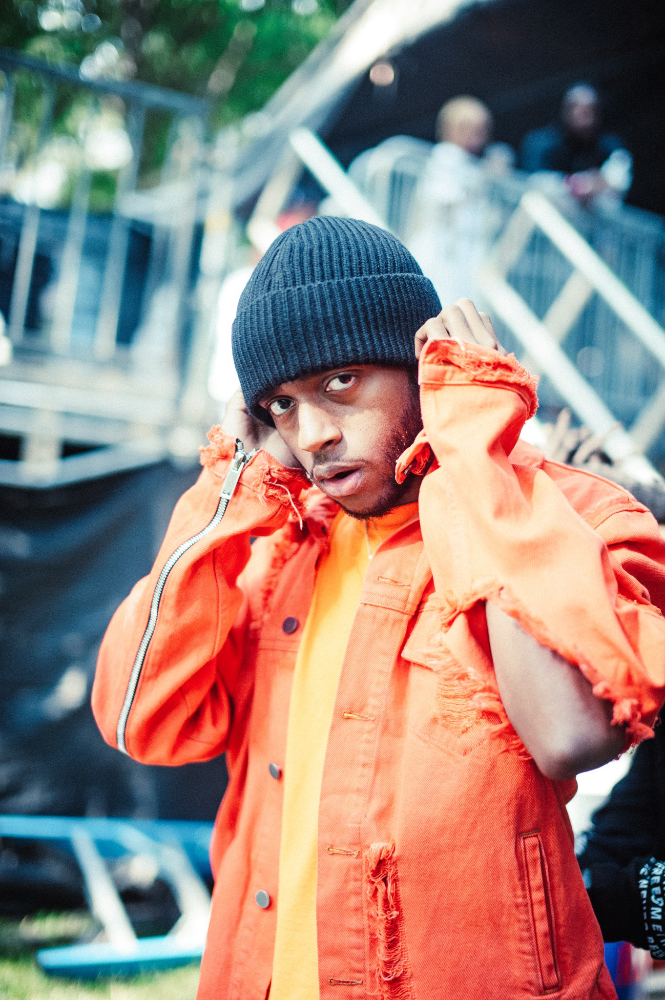
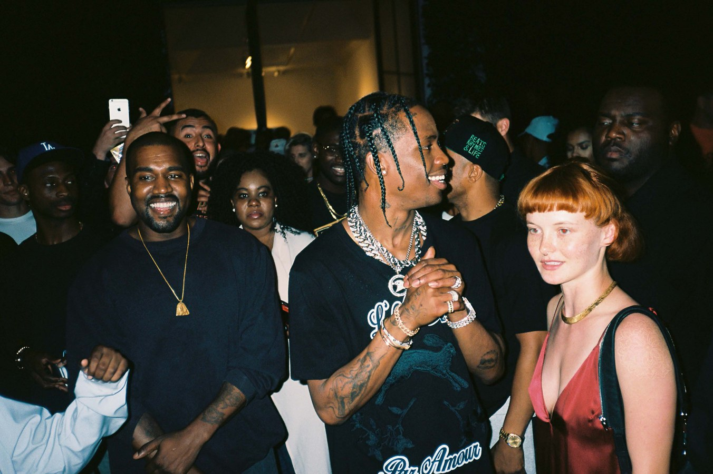
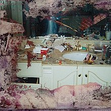
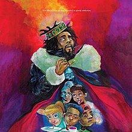

Kanye West's new album
Photo taken by Gunner Stahl
Newest Hiphop Photographer, young Dee Knows

 


These photos were taken by Dee Knows, hiphop photographer that only began his career at fourteen years old. His photography started out as a hobby, but quickly transformed into money making machine. Major magazines such as Complex and Paper magazine have offered thousands of dollors for his intimate photos of celebraties in the hihop culture. Shown above are photos of legendary Diddy,Miguel and new rapper 6lack. Dee's ambition is to create his own magazine with a team of young creatives that are ready to take on the hihop culture.
Hiphop and Fashion

Kanye west and Travis Scott spotted at the offwhite Spring 19 show.
Kanye and Travis are known to openly support their friend and creative designer of white, Virghil Abloh
at every event. Kanye and Virghil go way back, as Virghil began his step into the fashion world as Kanye Wests
stylist in the early 90s. They eventually formed a strong friendhsip, which aided Virghil from starting his
own brand. The offwhite brand has been spotted on many hiphop icons, showing offwhite as their favourite streetwear brand.
Best albums of 2019

